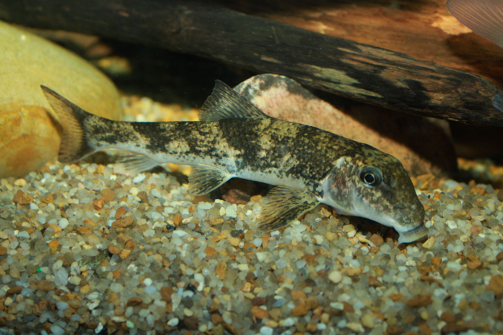
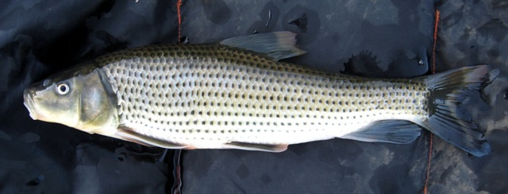

Various members of family Catostomidae!
Hypentelium nigricans
Northern Hogsucker

Identification:
- Blocky head
- Concave between the eyes
- 11 dorsal fin rays
Minytrema melanops
Spotted sucker

Identification:
- Black spot on every scale
- Black edge on dorsal and caudal fin